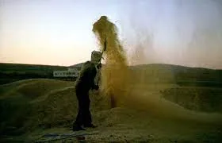
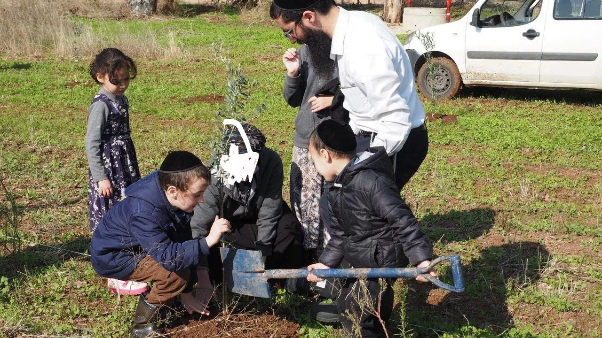
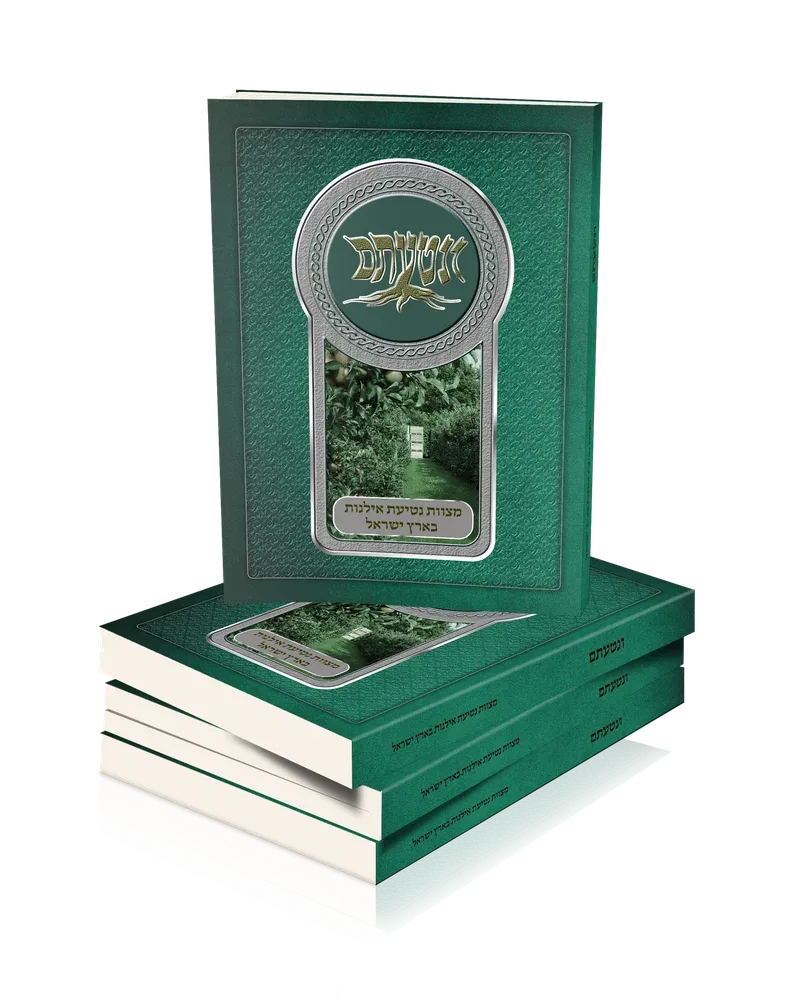

היה זה בערך בשנת תשע"ו. כאשר שברו את הבית הישן ובנו לידי בית חדש, תוך כדי העבודה, בשביל לעשות גדר מאבן בין החצרות עקרו כמה אילנות מחצרי.
מנהל העבודה ראה בצערי ואמר לי: "תקנה כמה עצים חדשים, והקבלן שיש לו לב טוב וודאי ישלם לך את עלות העצים".
לאחר שבחרתי לטעת כמה עצי מאכל, שאלתי אנשים האם הם מכירים איזה עובד גוי, שיטע בשבילי את העצים בגינה? הרי בין כך יש לי מי שמשלם, אז הוא ודאי יסכים לשלם גם את הפועל.
כששמע זאת יהודי עם לב של חיבת הארץ, הסתכל עלי בתמיהה רבתית –
לתת לגוי לקיים את המצווה במקומך?!
עד שיש לך הזדמנות של פעם בחיים לטעת עצי מאכל בגינה שלך בארץ ישראל, אתה חושב לתת מצווה כה יקרה לגוי?!
היה זה אחרי חג שבועות, לכן הוא הוסיף ואמר:
במגילת רות מסופר על בועז שהיה גדול הדור (רות רבה), שזרע את גורן השעורים בעצמו, בשביל מצוות ישוב ארץ ישראל (חתם סופר), ולך אין זמן בשביל לטעת עצים?!

החלטתי ללמוד את הסוגיה, את המקורות למצווה פרטיה דקדוקיה וכוונותיה, וראיתי שבאמת יש בזה מצווה גדולה מאוד.
לאחר מכן נגשתי בייחד עם כל בני משפחתי, גברים נשים וטף, לקיים מצווה זו בדחילו ורחימו, עם אמירת 'לשם יחוד קוב"ה ושכינתא'. וב"ה היה זה מרגש מאוד וכל בני המשפחה זוכרים זאת עד היום הזה.

זמן מסוים לאחר מכן ניגש אלי מנהל העבודה ושאלני האם בקשתי כבר מהקבלן את דמי העצים?
הסתכלתי עכשיו אני עליו בתמיהה, שאני ימכור מצווה בכסף?!
ח"ו אינני מוכר את המצווה שלי, עד שיש לי הזדמנות פעם בחיים לטעת עצים בארץ ישראל, לא מוכרים מצווה כה גדולה בשום מחיר בעולם.
הקב"ה מסבב הסיבות דואג לעושה רצונו, ודורשי ה' לא יחסרו כל טוב, וזכיתי לאכול פירותיהן כבר בעולם הזה.
אמנם את כסף העצים, לא קיבלתי מהקבלן, אבל לקראת גמר הבנין, שאלתי את הקבלן האם הוא רוצה להודות לה', שזיכה אותו לבנות בית בארץ ישראל?
הקבלן השיב שכן, ואז סיפרתי לו שאני מוציא ספרים על ההודיה לה', ואשמח מאוד לזכותו להודות לה' על ידי הוצאה של ספר נוסף.
ב"ה שנגמר הבנין הוא נתן לי תרומה - פי עשר מעלות העצים והעובד, לצורך הוצאת החוברת 'שערי הודיה'
בנוסף, מנהל העבודה כנראה מאוד התרשם ממעשה זה, ומאז הוא מביא לי מידי חודש בחודשו, תרומה לארגון ההודיה לה' - קול תודה.
והנה מעשה זה של נטיעת העץ, דבר שהביא הרבה מאוד פירות ופירי פירות.
סיפור זה הוא זה שהכניס אותי לעולם הנפלא של מצוות נטיעת עצים.
ובזכות סיפור נפלא זה זכינו ויצא לאור כעבור כ 5 שנים הספר הנפלא ונטעתם.
